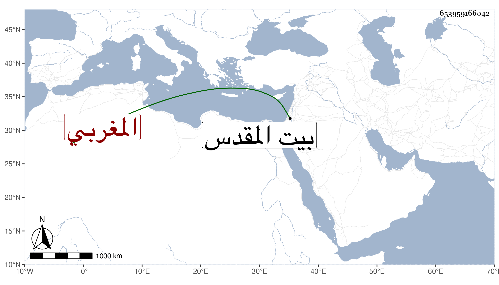

0902Sakhawi.DawLamic.ITO20230111-ara1.EIS1600.653959166042
Biography ID: 653959166042
285
محمد بن عبد الله المغربي نزيل بيت المقدس ويعرف بفولاد ، قدم بيت المقدس في حدود التسعين وسبعمائة فانقطع فيه للعبادة خاصة وداوم الجماعات وأكثر في كل سنة الحج والزيارة حتى قيل إنه حج ما ينيف على ستين مرة غالبها ماشيا واشتهر بالصلاح بين الخاص والعام وذكرت له كرامات جمة وأحوال مهمة . وقد ترجمه ابن قاضي شهبة فقال : كان رجلا صالحا مشهورا له حجات كثيرة تزيد على الستين أكثرها على أقدامه وله اجتماع بالأولياء وكشف ، وأما التقي الحصني فإنه لم يكن إذا قدم بيت المقدس ينزل عند أحد سواه ولا يأكل لغيره فيه طعاما ووصفه في بعض تعاليقه بالسيد الجليل وناهيك بهذا من مثله . مات بعد رجوعه من الحج في صفر سنة أربع وأربعين وقد جاز الثمانين .
